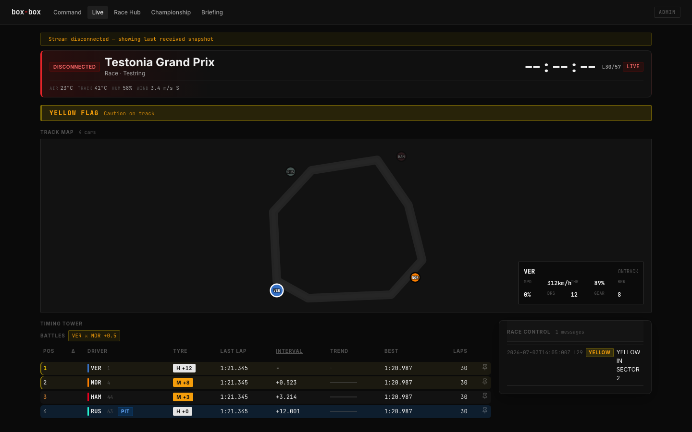
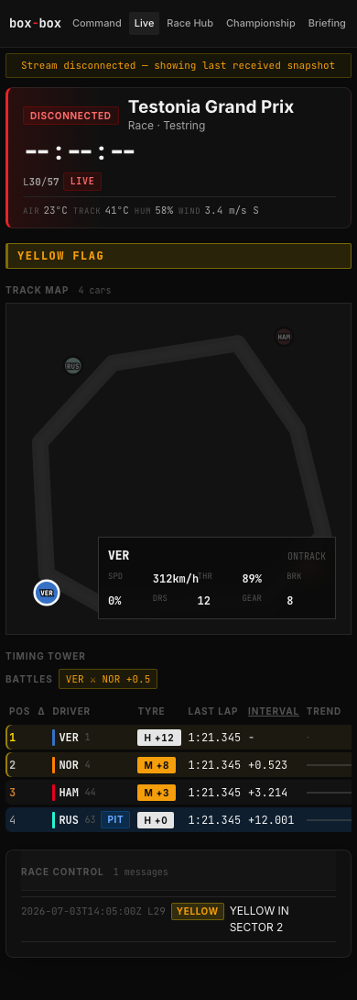
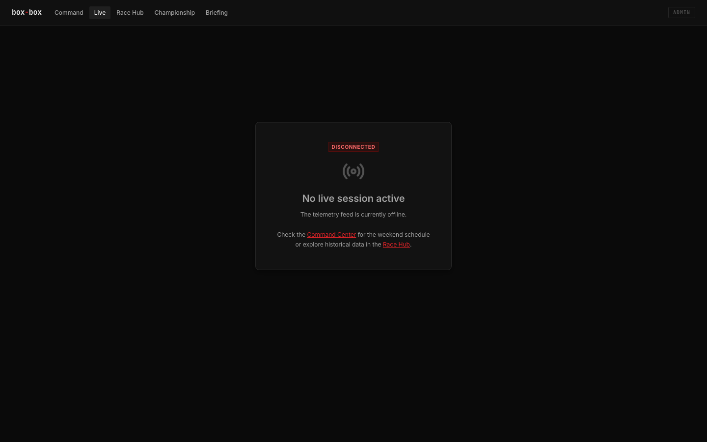
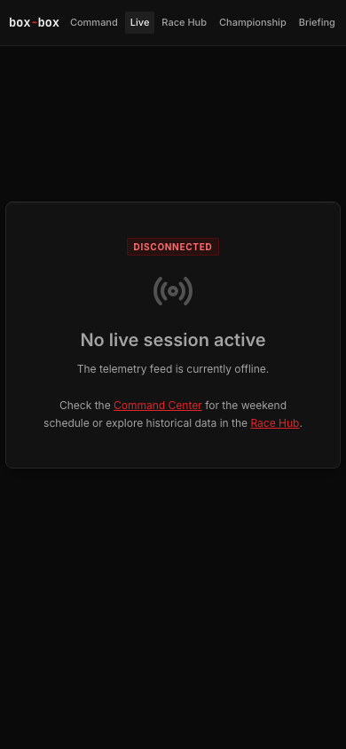
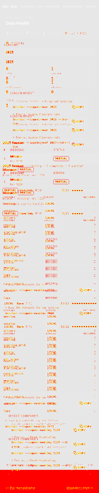

Local Review Packet: Issue #9 / PR #32
Reviewer harness: Codex · Implementer harness: Codex · Generated 2026-07-03
PASS WITH CAVEATS
Gates
- PASS:
go test ./internal/live ./internal/web - PASS:
npm run testinfrontend/(22 files, 182 tests) - PASS:
npm run buildinfrontend/ - PASS:
npm run test:e2e(26/26) - CAVEAT:
npm run test:visualpassed 11/12; mobile Data Library snapshot failed by height/image diff.
Track Map Screenshots


Empty State


Visual Diff Caveat
The existing visual suite failed only on mobile Data Library, not on the live page. The diff is preserved below for inspection.

npm run test:visual.